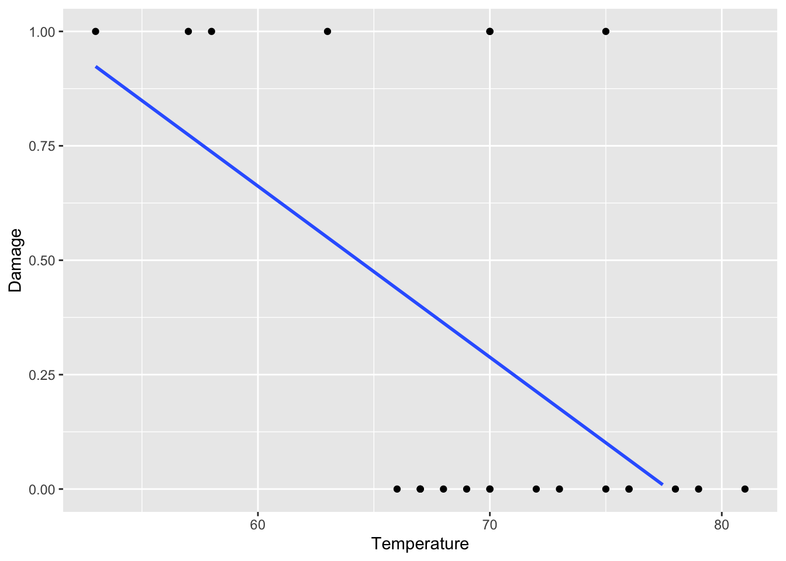
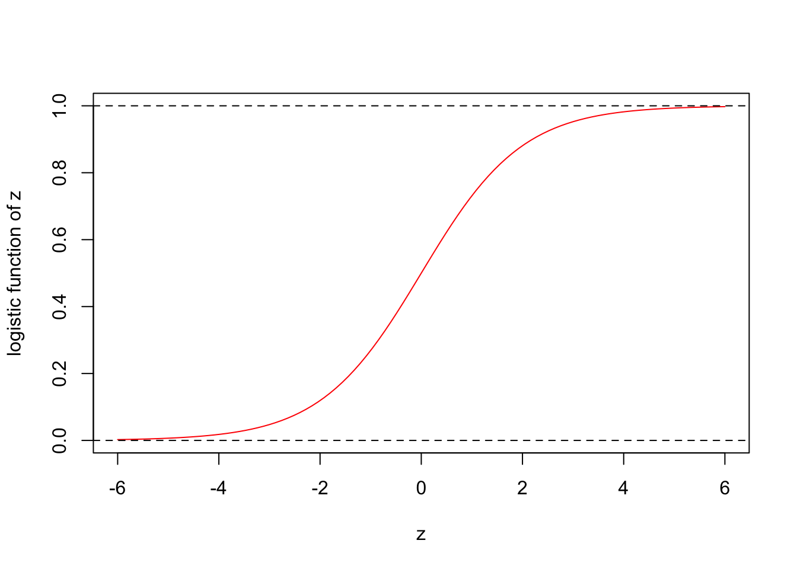
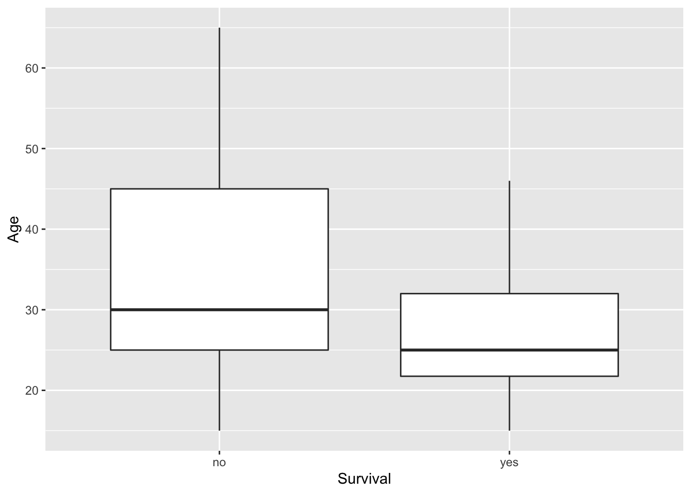

Thursday, November 3, 2022
Today
Logistic regression
- Binary outcomes and probability
- The logistic regression model
Linear regression is one of the most powerful tools in data science. But it’s utility is limited to response variables that can be approximated with a normal distribution.
When the response variable is binary (only two outcomes) a linear regression model should not be used.
Many scientific research questions involve binary outcomes, and there is often a need to predict the probability that something will happen. The probability you will get a virus.
Fortunately, with only a small modification to the linear regression model you can get a logistic regression model that describes how a binary response variable is related to a set of explanatory variables.
The mechanics of fitting a logistic regression model are the same as with fitting a linear regression. The model coefficients are determined using the method of maximum likelihood.
The method of maximum likelihood answers the question, what is the probability of our data given the model. A model that assigns the highest probability to our data is the model that is chosen.
Binary outcomes and probabilities
A key understanding here is that the average value over a set of binary responses is a number between 0 and 1. To see this, here we generate a set of random binary responses using the rbinom() function. r for random and binom for binomial distribution with a long-run probability of .2.
rbinom(n = 100,
size = 1,
prob = .2)## [1] 0 0 0 0 0 0 1 0 0 0 0 0 0 0 0 0 0 0 0 0 0 0 0 0 0 0 1 0 0 0 1 0 0 1 0 1 0
## [38] 0 0 0 0 0 0 0 0 0 0 0 0 0 0 1 0 0 0 0 0 0 1 0 0 0 0 0 0 1 1 0 0 1 0 0 0 0
## [75] 0 0 0 0 0 0 0 0 0 1 0 0 0 1 1 0 1 0 0 0 0 0 0 0 0 0The n = 100 is the number of binary responses to generate, size = 1 indicates two choices (0 or 1), and prob = .2 is the long-run probability of getting a 1.
If we say that an outcome of 1 is a success and that an outcome of 0 is a failure, then the average taken over all outcomes is the sample probability of success.
Here we compute averages over a samples of binary outcomes where the probability of a 1 (success) is .2, .5, and .9.
mean(rbinom(n = 100, size = 1, prob = .2))## [1] 0.16mean(rbinom(n = 100, size = 1, prob = .5))## [1] 0.48mean(rbinom(n = 100, size = 1, prob = .9))## [1] 0.84Repeat. We see that the sample means are close to the long-run probabilities.
Recall that a regression model predicts the conditional mean values of the response variable. When the response variable is binary, the mean values are probabilities, so a logistic regression predicts the conditional probability of something happening. For example, the probability of getting COVID-19 given your social distancing and mask-wearing habits.
Probabilities are bounded between 0 and 1, but the linear regression line is not.
Example: Consider data collected from the recovered solid booster rockets of the 23 previous shuttle flights (before the Challenger Space Shuttle disaster in 1986). The temperature in F at launch time and whether there was (1) or was not (0) damage to the O-rings on the booster.
Temperature <- c(66, 70, 69, 68, 67, 72, 73, 70, 57, 63, 70, 78, 67, 53, 67, 75, 70, 81, 76, 79, 75, 76, 58)
Damage <- c(0, 1, 0, 0, 0, 0, 0, 0, 1, 1, 1, 0, 0, 1, 0, 0, 0, 0, 0, 0, 1, 0, 1)The variable Damage is the response variable and Temperature is the explanatory variable.
We start with a scatter plot of these two variables along with the linear regression line.
df <- data.frame(Damage, Temperature)
library(ggplot2)
ggplot(data = df,
mapping = aes(x = Temperature, y = Damage)) +
geom_point() +
geom_smooth(method = lm, se = FALSE) +
scale_y_continuous(limits = c(0, 1))## `geom_smooth()` using formula 'y ~ x'## Warning: Removed 10 rows containing missing values (geom_smooth).
The plot shows more points at a value of 1 (at least some damage to the O-rings) when temperatures are lower and more more points at a value of 0 (no damage) when the temperatures are higher.
The linear regression line indicates this inverse relationship. The line slopes from upper left to lower right. We conclude that there is less chance of O-ring damage when temperatures are higher. But we note that the straight line does not capture this relationship very well.
We fit a linear regression model to these data.
lrm <- lm(Damage ~ Temperature,
data = df)
summary(lrm)##
## Call:
## lm(formula = Damage ~ Temperature, data = df)
##
## Residuals:
## Min 1Q Median 3Q Max
## -0.43762 -0.30679 -0.06381 0.17452 0.89881
##
## Coefficients:
## Estimate Std. Error t value Pr(>|t|)
## (Intercept) 2.90476 0.84208 3.450 0.00240 **
## Temperature -0.03738 0.01205 -3.103 0.00538 **
## ---
## Signif. codes: 0 '***' 0.001 '**' 0.01 '*' 0.05 '.' 0.1 ' ' 1
##
## Residual standard error: 0.3987 on 21 degrees of freedom
## Multiple R-squared: 0.3144, Adjusted R-squared: 0.2818
## F-statistic: 9.63 on 1 and 21 DF, p-value: 0.005383The model diagnostics indicate temperature is significant in explaining O-ring damage.
Looking at the slope coefficient we can state that for every one degree F decrease in temperature the chance of damage increases by 3.7 percentage points.
We interpret the predicted damage as the probability of damage for a given temperature (conditional mean).
We use the predict() method to predict the probability of damage when the launch temperatures are 77 F, 65 F, and 51 F. We multiply the predicted mean values by 100 so that the probabilities are in percentages.
predict(lrm,
newdata = data.frame(Temperature = c(77, 65, 51))) * 100## 1 2 3
## 2.642857 47.500000 99.833333Predictions make sense. When the launch temperature is 77 F, the chance of O-ring damage is quite small (2.6%) but when the launch temperature is 51 F, the change of O-ring damage is quite large (99.8%).
Although this appears to be a reasonable prediction equation, it leads to nonsensical forecasts. For example, what does the linear regression model predict when the temperature is 85 F and when it is 45 F?
predict(lrm,
newdata = data.frame(Temperature = c(85, 45))) * 100## 1 2
## -27.2619 122.2619These values do not make sense since probabilities are constrained to be between 0 and 100 (0 and 1).
Key point: Linear regression can not capture the bounded nature of probabilities.
Logistic regression
A regression model has a response function and a regression structure. The response function is specified on the left side of the regression equation and the regression structure on the right side of the equation.
With linear regression, the response function is the identity function. That is, for any value of \(y\) the function returns the value of \(y\). We write it as \[ f(y) = y \]
With logistic regression, the response function is the logit function. Said another way, logistic regression is a generalization of the linear regression model where the response function is the logit function.
We write the logit function as \[ f(y) = \hbox{logit}(y) \]
The logit is the logarithm of the odds ratio. The odds ratio is the probability of a thing happening to the probability it won’t happen. Using math \[ \hbox{logit}(\pi) = \log\left(\frac{\pi}{1 - \pi}\right). \]
We write odds as for:against. If there is a 2:1 odds of something happening, then the probability it will happen is 2/(1 + 2) or 2/3 (67%).
The inverse of the logit function is the logistic function. With logit(\(\pi\)) = \(z\), we have \[ \pi = \frac{\exp(z)}{1 + \exp(z)} = \frac{1}{1 + \exp(-z)}. \]
To make a graph of the logistic function we use the curve() function.
curve(1/(1 + exp(-x)),
from = -6, to = 6,
col = "red", ylab = "logistic function of z", xlab = "z")
abline(h = 1, lty = 2)
abline(h = 0, lty = 2)
The logistic function takes as input any value from negative infinity to positive infinity and returns a value between 0 and 1.
The variable \(z\) can be thought of as the exposure to some set of risk factors, while the logistic function represents the chance of a particular outcome given the exposure.
The variable \(z\) is a measure of the total contribution (weighted sum) of all the risk factors (explanatory variables). It is defined as \[ z = \beta_0 + \beta_1 x_1 + \beta_2 x_2 + \ldots + \beta_p x_p \] where the regression coefficients are \(\beta_0\),…, \(\beta_p\) and the risk factors are \(x_1\),…, \(x_p\). The intercept \(\beta_0\) is the value of \(z\) when there is no risk (base rate).
The regression coefficient quantifies the amount of contribution the associated variable makes to the overall risk. For example, the magnitude of \(\beta_1\) quantifies the amount of contribution variable \(x_1\) makes to the overall risk.
A positive regression coefficient means the variable increases the probability of the outcome. If the outcome is getting COVID-19, then the variable indicating that you don’t wear a mask in public, increases the probability of that outcome.
A negative regression coefficient means the variable decreases the probability of that outcome.
A large regression coefficient means the variable strongly influences the probability of that outcome; while a near-zero regression coefficient means the variable has little influence on the probability of that outcome.
Example: Who survives in the Donner Party?
The Donner and Reed families from Springfield, Illinois headed to California in 1846. The group, which became know as the ‘Donner Party’, was stranded in the Sierra Nevada mountains by heavy late October snows. By the time the last survivor was rescued in April 1847, 40 of the 87 members had died from famine and exposure to the cold.
The data file DonnerParty.txt contains a list of individuals in the Donner Party along with their age, sex, and whether or not they survived.
DP.df <- readr::read_table(file = "http://myweb.fsu.edu/jelsner/temp/data/DonnerParty.txt") |>
dplyr::mutate(Survival = as.factor(Survival))##
## ── Column specification ────────────────────────────────────────────────────────
## cols(
## Last = col_character(),
## First = col_character(),
## Sex = col_character(),
## Age = col_double(),
## Survival = col_character()
## )str(DP.df)## tibble [45 × 5] (S3: tbl_df/tbl/data.frame)
## $ Last : chr [1:45] "Antoine" "Breen" "Breen" "Burger" ...
## $ First : chr [1:45] "A" "Mary" "Patrick" "Charles" ...
## $ Sex : chr [1:45] "male" "female" "male" "male" ...
## $ Age : num [1:45] 23 40 40 30 28 40 45 62 65 45 ...
## $ Survival: Factor w/ 2 levels "no","yes": 1 2 2 1 1 1 1 1 1 1 ...The data frame contains the Name, Sex, Age, and Survival status of all individuals that were at least 15 years old.
How many individuals are coded as female and how many are coded as male?
table(DP.df$Sex)##
## female male
## 15 30How many survived?
table(DP.df$Survival)##
## no yes
## 25 20What was the average age in the party?
mean(DP.df$Age)## [1] 31.8What is the relationship between an individual’s age and whether or not they survived?
ggplot(data = DP.df,
mapping = aes(x = Survival, y = Age)) +
geom_boxplot()
Age appears to be a factor in explaining whether or not someone survived. Younger members of the party appear to have had a better chance of survival.
What about sex as an explanatory variable?
table(DP.df$Sex, DP.df$Survival)##
## no yes
## female 5 10
## male 20 10The table shows that of the 15 women, 5 perished and 10 survived. This compares with 20 deaths and 10 survivors among the men. It appears that sex is also important. Relatively more women survived than men.
Logistic regression quantifies these risk factors (sex and age) in terms of survival probability.
The variable Survival is our dependent (response) variable coded as no and yes. The two risk factors are Sex coded as male and female and Age in years.
So you fit a logistic model to these data with Survival as your response variable. You use the glm() function (generalized linear model) and specify family = binomial.
logrm <- glm(factor(Survival) ~ Age + Sex,
data = DP.df,
family = binomial)
logrm##
## Call: glm(formula = factor(Survival) ~ Age + Sex, family = binomial,
## data = DP.df)
##
## Coefficients:
## (Intercept) Age Sexmale
## 3.2304 -0.0782 -1.5973
##
## Degrees of Freedom: 44 Total (i.e. Null); 42 Residual
## Null Deviance: 61.83
## Residual Deviance: 51.26 AIC: 57.26You write the model, where \(\pi\) represents survival probability, as \[ \hbox{logit}(\pi) = 3.23 - .0782 \times \hbox{Age} - 1.597 \times \hbox{Sex} \]
You interpret the value of 3.23 as the base rate when Age is zero and Sex is zero. Although Sex is coded as a factor variable female comes before male alphabetically so female is zero.
You take the value of 3.23 as input to the logistic function and get
exp(3.23)/(1 + exp(3.23))## [1] 0.9619478The resulting value tells you that a newborn (Age = 0) girl would have a 96% chance of survival.
You get this answer directly with the predict() method by typing
predict(logrm,
newdata = data.frame(Age = 0, Sex = "female"),
type = "response")## 1
## 0.9619629Without the type = argument you get the logit value of 3.23.
You can also interpret the model in terms of the odds ratio. For example, the model tells you that the odds ratio of a 20-year old surviving relative to a 50-year old is \[ \exp(-.0782 \times (20 - 50)) \]
With code
exp(-.0782 * (20 - 50))## [1] 10.44371The odds of a 20-year old surviving is more than 10 times the odds of a 50-year old surviving regardless of whether the person is a man or woman.
If an explanatory variable increases by one unit while the other explanatory variables remain constant, the odds will change by a multiplicative amount given by the exponent of the coefficient.
The odds of a woman (Sex = 0) surviving relative to the odds of a man (Sex = 1) of the same age is
exp(-1.597 * (0 - 1))## [1] 4.938196Thus, the survival odds of a women are about 5 times the survival odds of a man both at the same age.
You get uncertainty intervals on the coefficients using an extractor function.
confint(logrm)## Waiting for profiling to be done...## 2.5 % 97.5 %
## (Intercept) 0.8514190 6.42669512
## Age -0.1624377 -0.01406576
## Sexmale -3.2286705 -0.19510198You see that the 95% uncertainty intervals for both factors do not include the value of zero. This indicates that Age and Sex are significant in statistically explaining survivability.
You can also check the importance of the variables with the summary() method on the model object.
summary(logrm)##
## Call:
## glm(formula = factor(Survival) ~ Age + Sex, family = binomial,
## data = DP.df)
##
## Deviance Residuals:
## Min 1Q Median 3Q Max
## -1.7445 -1.0441 -0.3029 0.8877 2.0472
##
## Coefficients:
## Estimate Std. Error z value Pr(>|z|)
## (Intercept) 3.23041 1.38686 2.329 0.0198 *
## Age -0.07820 0.03728 -2.097 0.0359 *
## Sexmale -1.59729 0.75547 -2.114 0.0345 *
## ---
## Signif. codes: 0 '***' 0.001 '**' 0.01 '*' 0.05 '.' 0.1 ' ' 1
##
## (Dispersion parameter for binomial family taken to be 1)
##
## Null deviance: 61.827 on 44 degrees of freedom
## Residual deviance: 51.256 on 42 degrees of freedom
## AIC: 57.256
##
## Number of Fisher Scoring iterations: 4You see that Age and Sex are significant variables in explaining the probability of survival (\(p\) values less than .05).
The smaller the residual deviance, the better the logistic model fits. Output shows a null deviance of 61.827 on 44 degrees of freedom. The null deviance is the deviance of a model with a constant (no explanatory variables) survival probability (44%; 20 out of 45 survived).
The residual deviance for the model with Age and Sex as explanatory variables is 51.256 on 42 degrees of freedom. The difference in deviance between the null and the full model is: 61.827 - 51.256 = 10.571. The difference in degrees of freedom is 44 - 42 = 2.
You compare this drop in deviance to a value from the chi-squared distribution with 2 degrees of freedom.
pchisq(10.571,
df = 2,
lower.tail = FALSE)## [1] 0.005064499This is the \(p\) value for the model as a whole. Since it is less than .01 you state that there is convincing evidence that the model helps statistically explain survivability given these data.
Here you predict the survival probability of a 50-year old man.
predict(logrm,
newdata = data.frame(Age = 50,
Sex = "male"))## 1
## -2.277083By default the predicted value is the logarithm of the odds. To convert this to a probability we use the logistic function or we use the type = "response" argument in the predict() method.
exp(-2.277)/(1 + exp(-2.277))## [1] 0.09304581predict(logrm,
newdata = data.frame(Age = 50,
Sex = "male"),
type = "response")## 1
## 0.09303878You see that, based on the data and the model, you would predict a survival probability of 9.3% for a 50-year old man.
What is the survival probability for a 50-year old woman? A 25-year old woman?
predict(logrm,
newdata = data.frame(Age = c(50, 25),
Sex = "female"),
type = "response",
se.fit = TRUE)## $fit
## 1 2
## 0.3363082 0.7816507
##
## $se.fit
## 1 2
## 0.1904773 0.1153756
##
## $residual.scale
## [1] 1You include the argument se.fit = TRUE to get a standard error on the predicted survival probability.
Assessing the adequacy of a linear regression model involves plots of the residuals. Similar diagnostics are available for assessing the adequacy of logistic regression, but they are often more difficult to interpret. For instance how do you examine the linearity assumption when the linearity is on the log of the odds?
Residual deviance: Returning to the output from summary(logrm), you find that the residual deviance is 51.256 on 42 degrees of freedom. A \(p\) value from a \(\chi^2\) distribution with a quantile value of 51.256 with this many degrees of freedom provides evidence against the null hypothesis. The null hypothesis is that the model is adequate.
Thus a small \(p\) value in this case is evidence against the null hypothesis, which is that the model is adequate.
pchisq(q = 51.256,
df = 42,
lower.tail = FALSE)## [1] 0.1549141Since the \(p\) value exceeds .05 you fail to reject the null hypothesis that the model is adequate and report that there is no compelling evidence that the model needs to be improved.
Example: Probability of rocket damage on liftoff
Returning to the data on the Space Shuttle O-ring damage and launch time temperature. The recovered booster rockets were checked for damage to the rings. A damaged rocket booster is coded as 1.
Temperature <- c(66, 70, 69, 68, 67, 72, 73, 70, 57, 63, 70, 78, 67, 53, 67, 75, 70, 81, 76, 79, 75, 76, 58)
Damage <- c(0, 1, 0, 0, 0, 0, 0, 0, 1, 1, 1, 0, 0, 1, 0, 0, 0, 0, 0, 0, 1, 0, 1)
ORings.df <- data.frame(Temperature, Damage)A logistic regression model is used to predict the probability of damage given the temperature.
Fit a logistic regression model to the data.
logrm <- glm(Damage ~ Temperature,
data = ORings.df,
family = binomial)
summary(logrm)##
## Call:
## glm(formula = Damage ~ Temperature, family = binomial, data = ORings.df)
##
## Deviance Residuals:
## Min 1Q Median 3Q Max
## -1.0611 -0.7613 -0.3783 0.4524 2.2175
##
## Coefficients:
## Estimate Std. Error z value Pr(>|z|)
## (Intercept) 15.0429 7.3786 2.039 0.0415 *
## Temperature -0.2322 0.1082 -2.145 0.0320 *
## ---
## Signif. codes: 0 '***' 0.001 '**' 0.01 '*' 0.05 '.' 0.1 ' ' 1
##
## (Dispersion parameter for binomial family taken to be 1)
##
## Null deviance: 28.267 on 22 degrees of freedom
## Residual deviance: 20.315 on 21 degrees of freedom
## AIC: 24.315
##
## Number of Fisher Scoring iterations: 5The negative sign on the Temperature coefficient indicates that the chance of O-ring damages decreases with increasing temperature.
You interpret the magnitude of the coefficient by first applying the exponentiation function (exp()).
exp(-.2322)## [1] 0.7927875The value of .79 tells you that for every 1 degree increase in temperature the chance of O-ring damage is only 79% of it’s previous value (given the model).
For example, to determine how much more likely there is to be damage when the temperature is 65 F compared to when the temperature is 69 F you use
round(exp(-.2322 * (65 - 69)), 1)## [1] 2.5Thus, on average, there is a 2.5 times increase in the chance of O-ring damage when launch temperatures are 65 F compared to when they are 69 F.
predict(logrm,
newdata = data.frame(Temperature = c(45, 95)),
type = "response")## 1 2
## 0.990004536 0.000899691With generalized linear models, model adequacy is determined by the residual deviance. No plots are needed.
The residual deviance is 20.315 on 21 degrees of freedom. A \(p\) value from a \(\chi^2\) distribution with this quantile value and this many degrees of freedom is evidence in favor of the null hypothesis that the model is adequate.
pchisq(q = 20.315,
df = 21,
lower.tail = FALSE)## [1] 0.5013948The large \(p\) value gives you no reason to question the adequacy of the model.